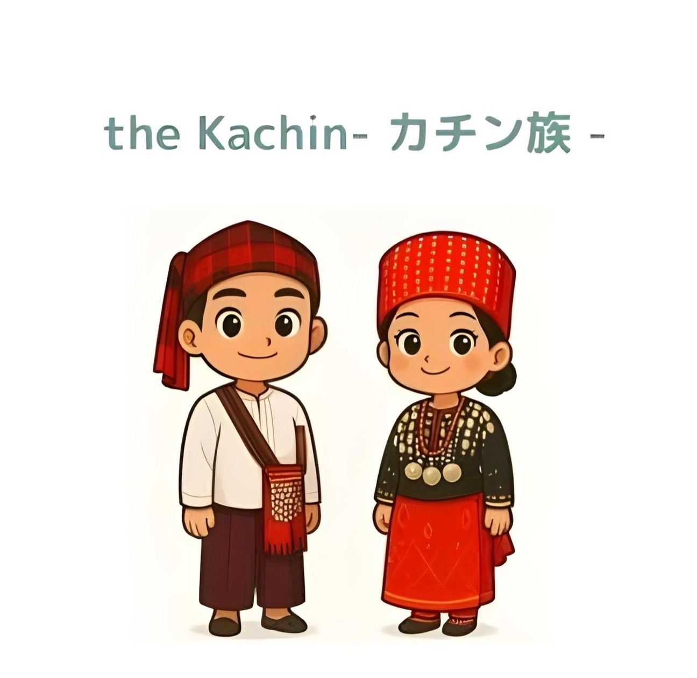
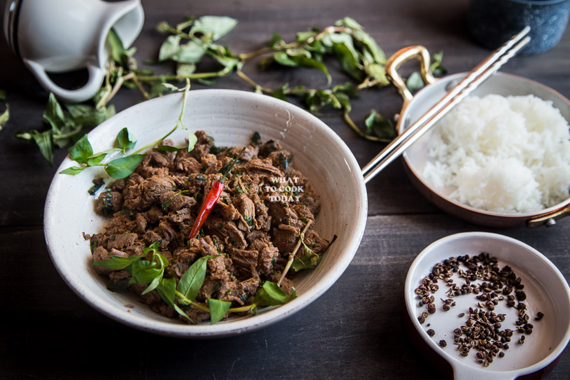
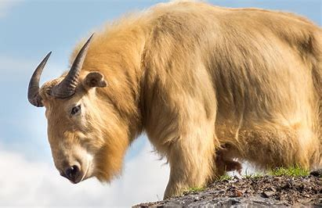
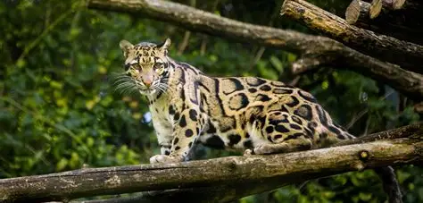
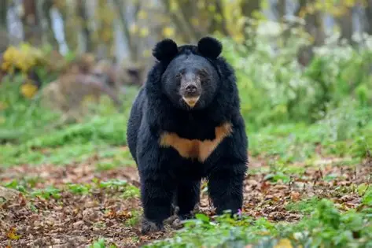

テキスタイル、ビーズ、音楽
カチン族の芸術には、豪華なビーズ細工や織物による衣服が含まれます。儀式用の衣装には、氏族特有の色彩や模様がしばしば見られます。
- ビーズネックレスと銀細工
- 手織りのチュニックとショール
- 祭りの音楽のための太鼓と銅鑼
カチン族（ジンポー・ウンポーン）は、ミャンマー北部の高地全域に複数のサブグループを形成しています。 精巧なビーズ細工、織物、高地農業で知られるカチン族のコミュニティは、氏族の絆と活気ある祭りを大切にしています。

カチン族は、ジンポー語、ラワン語、リスー語系など、独自の慣習を持つ複数の言語グループから構成されています。 伝統的な生計手段には、焼畑農業や段々畑農業、林産物の生産、国境を越えた交易などがあります。 地域社会の生活には、氏族制度、教会、そして有名なマナウ祭が見られます。
カチン族の芸術には、豪華なビーズ細工や織物による衣服が含まれます。儀式用の衣装には、氏族特有の色彩や模様がしばしば見られます。
マナウの祭りでは、高いトーテムの周りでのダンス、歌、祝宴、部族間の集まりなどが披露されます。
優雅さと文化的誇りを表す伝統衣装：

エーヤワディ川沿いの州都。文化と貿易の中心地。
ミャンマーの最高峰と高山の生物多様性への玄関口。
活気ある市場がある中国国境近くの歴史的な川沿いの町。
カチン州で楽しまれている、ハーブやスパイスを豊富に使い、独特の調理法を特徴とする伝統料理:

カチン州およびその周辺で見られる野生生物（例）



©2025 Group F - Tokyo Technical College